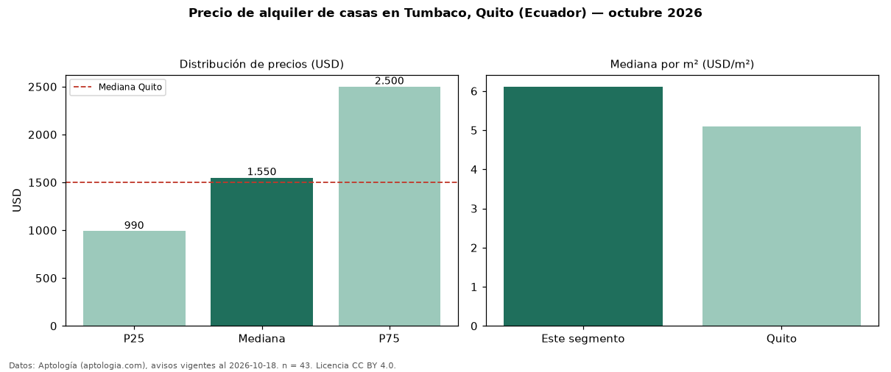

Precio de alquiler de casas en Tumbaco, Quito (Ecuador) — octubre 2026
Con 43 avisos vigentes, el canon mediano de casas en alquiler en Tumbaco, Quito (Ecuador) es USD 1.550 al mes. Prácticamente coincide con la mediana de Quito para casas (USD 1.500). Por metro cuadrado, la mediana es USD 6,11/m² al mes (n = 39 avisos con área), 20 % por encima de Quito (USD 5,09/m²). Con el precio por m² de venta del mismo segmento (USD 1.077/m²), la rentabilidad bruta implícita es 6,8 % anual (aproximación con medianas de ofertas distintas). La mitad central de los avisos va de USD 990 a USD 2.500 (razón 2,5), una dispersión alta. El área mediana anunciada es 314 m². El segmento con más oferta es el de 3 o más habitaciones (40 avisos, mediana USD 1.975). Datos: Aptología (aptologia.com), CC BY 4.0 — https://www.aptologia.com/ec/alquiler/quito/tumbaco. Archivos: PDF, CSV con las cifras y gráfica PNG.

| Avisos únicos | 43 |
|---|---|
| Percentil 25 | COP 990 |
| Mediana | COP 1.550 |
| Percentil 75 | COP 2.500 |
| Mediana por m² | COP 6 |
Fuente: avisos vigentes de portales inmobiliarios recopilados por Aptología, deduplicados (mínimo 30 avisos únicos por celda). Precios pedidos, no cerrados. Fecha: 2026-10-18.